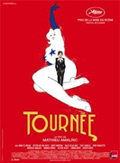

Kitty News and Events
Suzanne Ramsey aka Kitten on the Keys…This Internationally known versatile comedic performer MC's, sings, dances, tickles her ivories
Tease-O-Rama 2012
Catch Suzanne NOW performing in the Best of the Best in Burlesque. San Francisco, California. April 19th - 22nd.
For more information, visit site.
New Burlesque
CABARET NEW BURLESQUE
10 au 14.01 - Marseille (FR)
17 au 21.01 - Marseille (FR)
24 au 28.01 - Sète (FR)
31.01 - Romans S/Isère (FR)
01 et 02.02 - Amiens (FR)
04.02 - St Valery en Caux (FR)
29.03 - Evry (FR)
04 au 06.04 - Maribor (SI)
07.04 - Ptuj (SI)
12 au 14.04 - Reims (FR)
08 et 09.06 - Istres (FR)
12 au 17.06 - Lyon (FR)
19 au 22.06 - Lyon (FR)
Kitten in the News
Suzanne has been making waves in Europe and has been prominent in many magazine, newspaper,and television articles, and has appeared on selections from some of our musical faves including Bart and Baker's The Electro Swing IV compilation.

Tournee
TOURNEE wins Best Director for Mattieu Amalric 63rd Cannes Film Festival. Suzanne walked the red carpet along with the other stars of the film "Tournee".